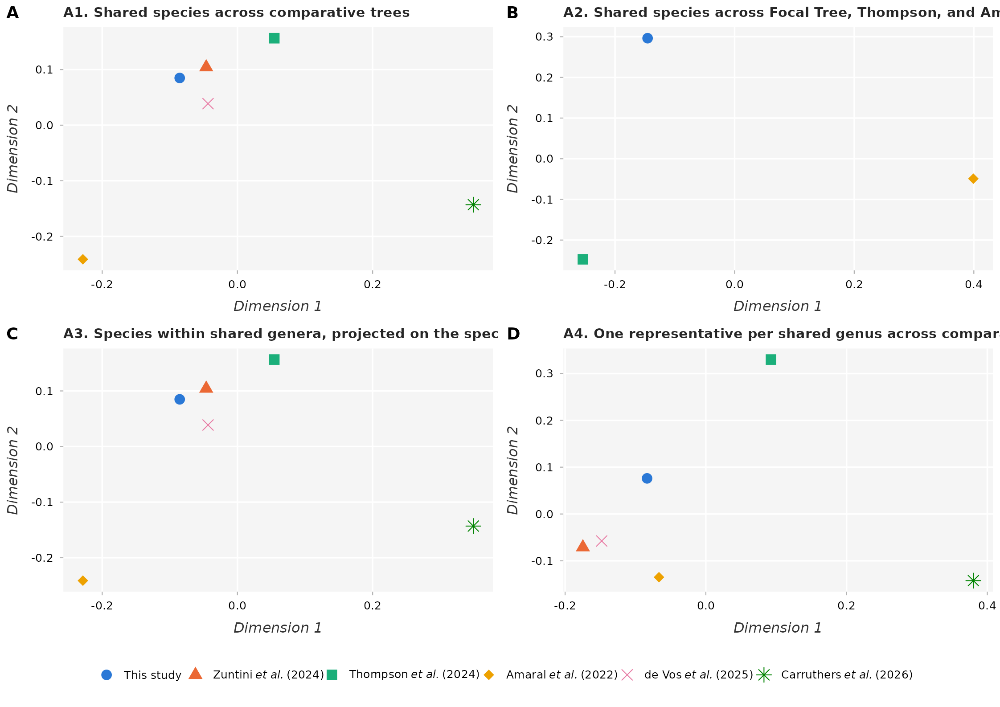

Tutorial 4: Phylogenetic Validation and Comparative Analyses
Beatriz M. Meriño
2026-11-13
Source:vignettes/tutorial-4-cactus-phylogeny-validation.Rmd
tutorial-4-cactus-phylogeny-validation.RmdAbstract
This tutorial compares the tree inferred in Tutorials 1 and 2 with five published phylogenies of Cactaceae. Comparison with published trees shows which relationships are shared and which differ.
The reference trees are those of Amaral et al. (2022), Thompson et al. (2024), Zuntini et al. (2024), de Vos et al. (2025) and Carruthers et al. (2026). The trees of Zuntini et al. (2024) and de Vos et al. (2025) are based on hundreds of nuclear genes.
The trees are compared with the Robinson-Foulds distance (Robinson & Foulds, 1981) and the Different Phylogenetic Information distance (Smith, 2020), and the distances are projected into tree space by multidimensional scaling (MDS).
Complete Pipeline Execution Workflow
Module 13: Comparison with Published Phylogenies
Reference Trees
The five reference trees are those of Amaral et al. (2022),
Thompson et al. (2024), Zuntini et al. (2024) and
Carruthers et al. (2026), and the species tree that de Vos
et al. (2025) estimated with ASTRAL-III from their
gene trees.
The user obtains each tree from its source, saves the five in one
folder under the names below, and sets the path of the folder in
~/.Renviron as PHYLOCACTUS_REFERENCE_TREES.
The comparison also reads the checklist of Cactaceae (Korotkova et
al. 2021) from the local path in PHYLOCACTUS_CHECKLIST
(phylocactus_checklist(); Tutorial 1).
| File in the folder | Study | Where the file is | File there | md5 of the file the reference run read |
|---|---|---|---|---|
reference_amaral_2022.tree |
Amaral et al. (2022) | Figshare, https://doi.org/10.6084/m9.figshare.17057816 | dataset+tree_80MD/Tree_80MD.tre |
185926b62a0a01b3187750e664e0fcf7 |
reference_thompson_2024.tree |
Thompson et al. (2024) | GitHub, https://github.com/jamie-thompson/cactaceae | Alignment, accessions and tree/treepl_cacti.tre |
df479c182a14028aa710b508aebaa458 |
reference_zuntini_2024.tree |
Zuntini et al. (2024) | Kew Tree of Life, release 4.0, SFTP server of Kew
(sftp.kew.org, folder pub/treeoflife) |
treeoflife.all_support_values.4.0.tree, pruned to
Cactaceae (below) |
319e6985225858b836ab2ff37054b3e5 |
reference_devos_2025_astral.tree |
de Vos et al. (2025) | Online Resource 4 of the article, https://doi.org/10.1007/s00606-025-01948-z | QC.Species_tree_astral.tree |
5ceb901a0555521da1a14f0815787362 |
reference_carruthers_2026.tree |
Carruthers et al. (2026) | OSF, https://doi.org/10.17605/OSF.IO/9TBHA |
best.tre_dated, pruned to Cactaceae (below) |
cdb7218a73ae92c868ae837d18c3256f |
Three files are used as their studies deposited them, and two are
pruned from larger trees. The tree of Kew is pruned to its 218 terminals
of Cactaceae, their labels are shortened from
Order_Family_Genus_species_<run> to
Genus_species, and one of the two terminals of
Trichocereus macrogonus is dropped
(Trichocereus_macrogonus_var._pachanoi_ERR13173055). The
chunk below does this: its tree has the 217 terminals and the topology
of the file of the reference run (Robinson-Foulds distance 0), without
the node annotations of Kew, so its md5 differs.
# The Cactaceae of the Kew Tree of Life, release 4.0, as reference_zuntini_2024.tree was built
kew <- paste(readLines("treeoflife.all_support_values.4.0.tree", warn = FALSE), collapse = "")
kew <- ape::read.tree(text = gsub("'\\[[^]]*\\]'", "", kew)) # node annotations removed
cactaceae <- grep("_Cactaceae_", kew$tip.label, value = TRUE)
cactaceae <- setdiff(cactaceae, "Caryophyllales_Cactaceae_Trichocereus_macrogonus_var._pachanoi_ERR13173055")
zuntini <- ape::keep.tip(kew, cactaceae)
zuntini$tip.label <- sub("^[^_]+_Cactaceae_([^_]+_[^_]+)_.*$", "\\1", zuntini$tip.label)
ape::write.tree(zuntini, file.path(Sys.getenv("PHYLOCACTUS_REFERENCE_TREES"), "reference_zuntini_2024.tree"))The dated tree of Carruthers et al. (2026),
best.tre_dated (md5
8bc0675dc015668dd04cf6d4460ae67f), has 128,270 terminals of
euphyllophytes labelled Genus_species__<NCBI taxid>.
The chunk below keeps the clade of Cactaceae, the most recent common
ancestor of the terminals whose genus is accepted in the checklist (1142
terminals, none of another family), and shortens the labels to
Genus_species, with hyphens written as underscores as the
package writes the names of the checklist (Pereskia
diaz-romeroana becomes Pereskia_diaz_romeroana). The
names are not resolved: validate_phylogenies() keeps those
the checklist accepts.
# The Cactaceae of the dated tree of Carruthers et al. (2026), as reference_carruthers_2026.tree was built
carruthers <- ape::read.tree("best.tre_dated")
genus <- sub("_.*$", "", carruthers$tip.label)
checklist <- readxl::read_excel(phylocactus_checklist(), sheet = "Cactaceae")
accepted_genera <- checklist$pureName[checklist$RANK == "Genus"]
crown <- ape::getMRCA(carruthers, carruthers$tip.label[genus %in% accepted_genera])
cactaceae <- ape::extract.clade(carruthers, crown)
cactaceae$tip.label <- gsub("-", "_", sub("__[0-9]+$", "", cactaceae$tip.label))
stopifnot(!anyDuplicated(cactaceae$tip.label))
ape::write.tree(cactaceae, file.path(Sys.getenv("PHYLOCACTUS_REFERENCE_TREES"), "reference_carruthers_2026.tree"))Species Tree from the Gene Trees of de Vos et al. (2025)
Gene trees estimated from multilocus and target-capture data often disagree. Part of this discordance has biological causes, such as incomplete lineage sorting (Kubatko & Degnan, 2007) and hybridization.
ASTRAL-III (Zhang et al., 2018) estimates a
species tree from a set of unrooted gene trees under the multispecies
coalescent, by finding the species tree that shares the largest number
of quartets with the gene trees. The ASTRAL-III Java
archive (.jar) must be downloaded separately.
Paths in .Renviron
Store paths to local software and data in ~/.Renviron.
Shared scripts then contain no local paths.
# Add these lines to your ~/.Renviron file (e.g., using usethis::edit_r_environ())
# PHYLOCACTUS_REFERENCE_TREES="/path/to/reference_trees"
# PHYLOCACTUS_CHECKLIST="/path/to/CactaceaeFullList_2026_07_01_Beatriz_Merino.xlsx"
# ASTRAL_PATH="/path/to/astral.5.7.8.jar"
# DEVOS_GENETREES_PATH="/path/to/QC.bestTreeCollapsed.trees"
# DEVOS_METADATA_PATH="/path/to/606_2025_1948_MOESM1_ESM.csv"
# Read them in R:
reference_dir <- Sys.getenv("PHYLOCACTUS_REFERENCE_TREES")
astral_jar <- Sys.getenv("ASTRAL_PATH")
gene_trees_file <- Sys.getenv("DEVOS_GENETREES_PATH")
metadata_file <- Sys.getenv("DEVOS_METADATA_PATH")Running ASTRAL-III
de Vos et al. (2025) sequenced the Angiosperms353 loci. The
reference tree used here is the ASTRAL-III species tree the
study published (QC.Species_tree_astral.tree, Online
Resource 4), whose terminals carry species names. It can be estimated
again from their gene trees, after the tip labels are converted to
species names with the sample metadata of the study.
The chunk below renames the tips of the gene trees, writes them to a
file, and runs ASTRAL-III. With
run_astral_locally <- FALSE, the default, it copies the
species tree saved in the folder of reference trees instead. Output
files are written to a temporary directory; change val_dir
to keep them.
# Target output paths in the validation directory
val_dir <- file.path(tempdir(), "10_Validation")
dir.create(val_dir, recursive = TRUE, showWarnings = FALSE)
output_tree <- file.path(val_dir, "QC.Species_tree_astral.tree")
renamed_gene_trees_file <- file.path(val_dir, "QC.Species_tree_astral_rename.tree")
# Set to TRUE to run ASTRAL-III; FALSE (default) copies the precomputed tree.
run_astral_locally <- FALSE
astral_jar <- Sys.getenv("ASTRAL_PATH")
devos_gene_trees <- Sys.getenv("DEVOS_GENETREES_PATH")
devos_metadata <- Sys.getenv("DEVOS_METADATA_PATH")
java_bin <- Sys.which("java")
if (!nzchar(java_bin) && file.exists("/opt/homebrew/opt/openjdk/bin/java")) {
java_bin <- "/opt/homebrew/opt/openjdk/bin/java"
}
if (run_astral_locally && nzchar(astral_jar) && file.exists(astral_jar) &&
nzchar(devos_gene_trees) && file.exists(devos_gene_trees) &&
nzchar(devos_metadata) && file.exists(devos_metadata) &&
nzchar(java_bin)) {
meta <- read.csv(devos_metadata, stringsAsFactors = FALSE, check.names = FALSE)
meta$species_name <- gsub(" ", "_", meta$`Scientific name`)
meta$Sample_from_tree <- stringr::str_extract(meta$`Name in tree`, "P[0-9]+")
map_sample <- setNames(meta$species_name, meta$Sample_from_tree)
map_srr <- setNames(meta$species_name, meta$`ENA run acc.`)
gene_trees <- ape::read.tree(devos_gene_trees)
rename_tips <- function(tree) {
tips <- tree$tip.label
paftol_to_sample <- function(x) {
num <- stringr::str_extract(x, "[0-9]+")
paste0("P", stringr::str_sub(num, -5))
}
sample_ids <- ifelse(stringr::str_detect(tips, "PAFTOL"), paftol_to_sample(tips), NA)
species_vec <- ifelse(stringr::str_detect(tips, "PAFTOL"), map_sample[sample_ids], map_srr[tips])
species_vec[is.na(species_vec)] <- tips[is.na(species_vec)]
tree$tip.label <- species_vec
return(tree)
}
gene_trees <- lapply(gene_trees, rename_tips)
class(gene_trees) <- "multiPhylo"
ape::write.tree(gene_trees, file = renamed_gene_trees_file)
cmd <- paste(shQuote(java_bin), "-jar", shQuote(astral_jar),
"-i", shQuote(renamed_gene_trees_file),
"-o", shQuote(output_tree), "2>/dev/null")
system(cmd)
} else {
# Copy the de Vos et al. (2025) species tree saved in the folder of reference trees
ref_devos <- file.path(Sys.getenv("PHYLOCACTUS_REFERENCE_TREES"), "reference_devos_2025_astral.tree")
file.copy(ref_devos, output_tree, overwrite = TRUE)
}Topological Comparison
The focal tree is the chronogram from Module 10, whose topology is
that of the maximum-likelihood tree (all 1205 bipartitions shared).
validate_phylogenies() restricts every tree to Cactaceae
and to the names accepted in the checklist, then computes pairwise
distances on four taxon sets:
- A1: species shared by all trees
- A2: species shared by the focal tree and the trees of Thompson et al. (2024) and Amaral et al. (2022)
- A3: all species in the genera shared by all trees
- A4: one species per genus shared by all trees
The normalized Robinson-Foulds distance (RF) is computed for each pair of trees. RF is the proportion of bipartitions that are not shared by the two trees and is computed on unrooted trees. The distance matrix is projected onto two dimensions by classical MDS; trees that lie close together have similar topologies.
Rooting. validate_phylogenies() roots
every tree on Leuenbergeria. The Module 10 chronogram is rooted
on Talinaceae, but the family filter removes all terminals outside
Cactaceae, and Leuenbergeria is sister to the rest of the
family in the focal tree. The genus can be changed with
rooting_genus; trees without it are left unrooted and
flagged in SUPP_rooting_summary.
The constraint. The focal tree was inferred under the topological constraint of Module 8 (Tutorial 2), so part of its agreement with each reference is imposed by the constraint and not found by the data. On each shared taxon set, 9 to 17 of the bipartitions the focal tree shares with a reference are imposed by the constraint: 28 to 37 % of the shared bipartitions in the small sets A1 and A4, where the deep splits weigh most, and 5 to 8 % in the large sets of Thompson et al. (2024), Amaral et al. (2022) and Carruthers et al. (2026). The table below gives, for the reference run, the published RF beside the RF without the constrained bipartitions, removed from both trees of the pair. Every distance rises, by 0.010 to 0.100. For example, the RF of A1 against Zuntini et al. (2024) rises from 0.193 to 0.238. The order of the references by distance does not change in any set. Tutorial 2 weighs the constrained bipartitions absent from each reference by the support of the reference clades that contradict them: the two nuclear trees contradict none at the level of a tribe with support, while Amaral et al. (2022) contradicts two relationships at that level with support, Tephrocacteae with Opuntieae (ultrafast bootstrap 100) and core Cactoideae I with II (99), and places Rhipsalideae outside the rest of core Cactoideae at ultrafast bootstrap 87, below the 95 at which the documentation of IQ-TREE advises relying on that measure (Minh et al., 2013; Hoang et al., 2018).
| Set | Reference | Shared terminals | Imposed and in the reference | RF | RF without the constrained bipartitions |
|---|---|---|---|---|---|
| A1 | Zuntini | 60 | 14 | 0.193 | 0.238 |
| A1 | Thompson | 60 | 12 | 0.386 | 0.465 |
| A1 | Amaral | 60 | 12 | 0.421 | 0.512 |
| A1 | de Vos | 60 | 14 | 0.228 | 0.286 |
| A1 | Carruthers | 60 | 9 | 0.509 | 0.573 |
| A2 | Thompson | 620 | 14 | 0.554 | 0.564 |
| A2 | Amaral | 620 | 17 | 0.645 | 0.661 |
| A3 | Zuntini | 117 | 15 | 0.421 | 0.469 |
| A3 | Thompson | 732 | 14 | 0.627 | 0.637 |
| A3 | Amaral | 629 | 17 | 0.677 | 0.695 |
| A3 | de Vos | 86 | 15 | 0.325 | 0.388 |
| A3 | Carruthers | 734 | 15 | 0.663 | 0.676 |
| A4 | Zuntini | 76 | 15 | 0.342 | 0.416 |
| A4 | Thompson | 76 | 12 | 0.425 | 0.483 |
| A4 | Amaral | 76 | 14 | 0.479 | 0.579 |
| A4 | de Vos | 76 | 14 | 0.315 | 0.368 |
| A4 | Carruthers | 76 | 10 | 0.548 | 0.610 |
What each reference can test. The tree of Zuntini
et al. (2024) is built on a constrained backbone of at most
five samples per family, so its deep relationships within Cactaceae are
not an independent test of the constraint (Tutorial 2). The tree of
Thompson et al. (2024) carries no support values, and its root
is set at 37.24 Ma, the upper end of the 95 % HPD interval of the
Cactaceae crown in Ramírez-Barahona et al. (2020), so its ages
are not independent of calibration scheme 2 (Tutorial 2, Module 10). It
is a comparison tree only, and a distance to it says nothing on the
support of a conflict. The tree of Amaral et al. (2022) was
inferred from GenBank sequences mined with phylotaR, the
source of this package too, aligned with MAFFT, concatenated and
analysed with IQ-TREE 2.1 under constraints on core Cactoideae and on
Cacteae, with five outgroup species. The tree used here is that of their
matrix with up to 80 % missing data (Tree_80MD.tre, 921
species after their filtering), chosen by the authors among matrices
with 40, 60 and 80 % missing data. Its supports are ultrafast bootstrap
values of IQ-TREE 2, which are not on the scale of the standard
bootstrap. It shares its source of data with the focal tree and is not
an independent test of it. The tree of Carruthers et al. (2026)
grafts species-level trees onto the dated backbone of Zuntini et
al. (2024). Each species-level tree was inferred with
RAxML 8.2.12 from GenBank sequences assembled with
PyPHLAWD, under a topological constraint built from the
NCBI taxonomy. The monophyly of the genera in that tree follows from the
constraint, and its sequences come from GenBank, as those of the focal
tree do, so it is not an independent test of the focal tree either.
Trees compared. The five reference trees are read
from the folder in PHYLOCACTUS_REFERENCE_TREES. The focal
tree is the chronogram produced in Module 10,
8_Dating/Zuntini2024_young/dated_summary_hpd.tree.
The chunk below runs the comparison on the user’s machine. Figure 1
and Table 1 are then drawn from the tree-space coordinates and the
pairwise distances of the reference run; plot_tree_space()
draws the figure that validate_phylogenies() returns.
library(PhyloCactus)
# The focal tree is the chronogram of this run; the reference trees and the checklist are read from
# local paths (PHYLOCACTUS_REFERENCE_TREES, PHYLOCACTUS_CHECKLIST).
focal_tree <- file.path("8_Dating", "Zuntini2024_young", "dated_summary_hpd.tree")
if (!file.exists(focal_tree)) {
focal_tree <- system.file("extdata", "phylocactus_chronogram_hpd.tree", package = "PhyloCactus")
}
reference_dir <- Sys.getenv("PHYLOCACTUS_REFERENCE_TREES")
tree_paths <- list(
FocalTree = focal_tree,
Zuntini = file.path(reference_dir, "reference_zuntini_2024.tree"),
Thompson = file.path(reference_dir, "reference_thompson_2024.tree"),
Amaral = file.path(reference_dir, "reference_amaral_2022.tree"),
deVos = file.path(reference_dir, "reference_devos_2025_astral.tree"),
Carruthers = file.path(reference_dir, "reference_carruthers_2026.tree")
)
# Drop trees whose files are missing
existing_trees <- tree_paths[sapply(tree_paths, function(x) nzchar(x) && file.exists(x))]
if (length(existing_trees) > 1) {
checklist_file <- phylocactus_checklist()
constraints_file <- system.file("extdata", "cactus_constraints.csv", package = "PhyloCactus")
# validate_phylogenies() harmonizes tip names, computes RF and DPI distances,
# and projects them into tree space.
validation_outputs <- validate_phylogenies(
trees_mapping_list = existing_trees,
checklist_csv = checklist_file,
constraints_map = constraints_file,
min_tips = 4L,
pruning_strategy = "common_set",
rooting_genus = "Leuenbergeria",
out_dir = file.path(tempdir(), "10_Validation")
)
validation_outputs$plot
} else {
message("Set PHYLOCACTUS_REFERENCE_TREES to the folder of the reference trees to run the validation.")
}
library(PhyloCactus)
# Tree-space coordinates of the reference run (SUPP_tree_space_coordinates.csv of Module 13)
tree_space <- read.csv(system.file("extdata", "phylocactus_table_tree_space.csv", package = "PhyloCactus"))
plot_tree_space(tree_space, metric = "RF")
Figure 1. Tree space of the focal chronogram and the
five published phylogenies: classical MDS of the normalized
Robinson-Foulds (RF) distances, one panel per taxon set (A1 to A4).
Trees close together have similar topologies. Under
common_set each set is pruned to the species shared by all
its trees before the projection; for A3 these are the species of A1, so
panels A and C have the same points.
| analysis_id | analysis_label | metric | tree_1 | tree_2 | n_common_tips | distance |
|---|---|---|---|---|---|---|
| A1_species_all4 | A1. Shared species across comparative trees | RF | Zuntini | FocalTree | 60 | 0.1929825 |
| A1_species_all4 | A1. Shared species across comparative trees | RF | Thompson | FocalTree | 60 | 0.3859649 |
| A1_species_all4 | A1. Shared species across comparative trees | RF | Amaral | FocalTree | 60 | 0.4210526 |
| A1_species_all4 | A1. Shared species across comparative trees | RF | deVos | FocalTree | 60 | 0.2280702 |
| A1_species_all4 | A1. Shared species across comparative trees | RF | Carruthers | FocalTree | 60 | 0.5087719 |
| A1_species_all4 | A1. Shared species across comparative trees | RF | Thompson | Zuntini | 60 | 0.3157895 |
TABLE_pairwise_tree_distances_main.csv lists the
distances for every pair of trees and every taxon set, and
FIG_tree_space_main.pdf shows the tree-space projections.
The distances summarize overall agreement between topologies; they do
not identify which clades are in conflict.
Monophyly of the Genera
Of the 102 genera of Cactaceae with two species or more in the tree,
39 are not monophyletic in the maximum-likelihood tree of the reference
run (phylocactus_ml_tree.tree, rooted on Talinaceae). For
27 of them the non-monophyly rests only on nodes under FBP 70: once
those nodes are collapsed, the genus is compatible with the tree, so its
split is a soft polytomy, a lack of signal, which the incomplete
sampling of the genus and the few, little-variable loci probably
explain, and not evidence against the genus. The largest are
Mammillaria (118 species, 52 of them single-locus),
Pilosocereus (37 species in 8 fragments, whose best-supported
contradicting clade has FBP 7), Selenicereus,
Cochemiea and Parodia.
The other 12 genera are contradicted by at least one unconstrained clade of FBP 70 or more, and in each case the clade places one or a few species of another accepted genus inside the genus, or a few of its species inside another: Pachycereus with Carnegiea (FBP 97, a clade of two terminals), Eriosyce with Rimacactus (96), Cephalocereus and Lophocereus with each other (89 and 72), Espostoa with Rauhocereus (87), Rapicactus and Acharagma with each other (87 and 85), Homalocephala with Astrophytum and Echinocactus (85), Lophophora with Obregonia (72), Matucana with Borzicactus (71), and Echinopsis and Chamaecereus with each other (70). In this tree each conflict rests on few terminals, and this table does not separate a question of generic delimitation from the identification of the sequenced vouchers or from the composite terminals of Tutorial 1. Without the 214 single-locus terminals, 32 genera stay non-monophyletic, 4 become monophyletic (Homalocephala, Cochemiea, Parodia, Rebutia) and 3 keep fewer than two species.
“Fragments” counts the maximal clades made only of species of the genus; “Highest FBP of a contradicting clade” is the support of the best-supported unconstrained clade that holds part of the genus and other terminals, and the next column names the other genera in it.
| Genus | Species in the tree | Fragments | Single-locus species | Highest FBP of a contradicting clade | Other genera in that clade | Without single-locus terminals | Reading |
|---|---|---|---|---|---|---|---|
| Eriosyce | 41 | 5 | 1 | 96 | Rimacactus | not monophyletic | supported conflict (FBP 70 or more) |
| Matucana | 17 | 5 | 0 | 71 | Borzicactus | not monophyletic | supported conflict (FBP 70 or more) |
| Cephalocereus | 13 | 2 | 0 | 89 | Lophocereus | not monophyletic | supported conflict (FBP 70 or more) |
| Espostoa | 11 | 7 | 0 | 87 | Rauhocereus | not monophyletic | supported conflict (FBP 70 or more) |
| Echinopsis | 10 | 2 | 0 | 70 | Chamaecereus | not monophyletic | supported conflict (FBP 70 or more) |
| Pachycereus | 5 | 2 | 0 | 97 | Carnegiea | not monophyletic | supported conflict (FBP 70 or more) |
| Rapicactus | 5 | 3 | 3 | 87 | Acharagma | not monophyletic | supported conflict (FBP 70 or more) |
| Homalocephala | 3 | 2 | 1 | 85 | Astrophytum, Echinocactus | monophyletic | supported conflict (FBP 70 or more) |
| Lophocereus | 3 | 2 | 0 | 89 | Cephalocereus | not monophyletic | supported conflict (FBP 70 or more) |
| Lophophora | 3 | 3 | 2 | 72 | Obregonia | fewer than 2 species | supported conflict (FBP 70 or more) |
| Acharagma | 2 | 2 | 0 | 87 | Rapicactus | not monophyletic | supported conflict (FBP 70 or more) |
| Chamaecereus | 2 | 2 | 0 | 70 | Echinopsis | not monophyletic | supported conflict (FBP 70 or more) |
| Mammillaria | 118 | 29 | 52 | 52 | Cochemiea | not monophyletic | unresolved (soft polytomy) |
| Pilosocereus | 37 | 8 | 1 | 7 | Discocactus, Xiquexique | not monophyletic | unresolved (soft polytomy) |
| Selenicereus | 28 | 2 | 2 | 66 | Armatocereus | not monophyletic | unresolved (soft polytomy) |
| Cochemiea | 22 | 11 | 3 | 52 | Mammillaria | monophyletic | unresolved (soft polytomy) |
| Parodia | 19 | 5 | 8 | 48 | Yavia | monophyletic | unresolved (soft polytomy) |
| Ferocactus | 17 | 11 | 9 | 54 | Stenocactus | not monophyletic | unresolved (soft polytomy) |
| Stenocereus | 16 | 3 | 6 | 51 | Myrtillocactus, Polaskia, Escontria | not monophyletic | unresolved (soft polytomy) |
| Cereus | 12 | 6 | 3 | 46 | Micranthocereus | not monophyletic | unresolved (soft polytomy) |
| Borzicactus | 10 | 2 | 0 | 37 | Matucana | not monophyletic | unresolved (soft polytomy) |
| Acanthocereus | 9 | 2 | 0 | 3 | Selenicereus, Disocactus, Epiphyllum, Weberocereus, Pseudorhipsalis, Kimnachia | not monophyletic | unresolved (soft polytomy) |
| Cleistocactus | 9 | 2 | 0 | 48 | Weberbauerocereus | not monophyletic | unresolved (soft polytomy) |
| Pelecyphora | 9 | 2 | 1 | 17 | Coryphantha, Mammillaria | not monophyletic | unresolved (soft polytomy) |
| Leucostele | 7 | 2 | 4 | 29 | Harrisia | not monophyletic | unresolved (soft polytomy) |
| Thelocactus | 7 | 6 | 1 | 47 | Ferocactus | not monophyletic | unresolved (soft polytomy) |
| Weberbauerocereus | 7 | 3 | 1 | 48 | Cleistocactus | not monophyletic | unresolved (soft polytomy) |
| Armatocereus | 5 | 3 | 1 | 66 | Selenicereus | not monophyletic | unresolved (soft polytomy) |
| Melocactus | 5 | 2 | 2 | 64 | Arrojadoa | not monophyletic | unresolved (soft polytomy) |
| Oreocereus | 5 | 3 | 0 | 60 | Matucana, Haageocereus, Oroya, Pygmaeocereus, Cremnocereus, Mila | not monophyletic | unresolved (soft polytomy) |
| Browningia | 4 | 3 | 1 | 21 | Rebutia | not monophyletic | unresolved (soft polytomy) |
| Xiquexique | 4 | 3 | 0 | 9 | Discocactus | not monophyletic | unresolved (soft polytomy) |
| Cipocereus | 3 | 2 | 2 | 26 | Cereus | fewer than 2 species | unresolved (soft polytomy) |
| Rebutia | 3 | 2 | 1 | 36 | Gymnocalycium, Aylostera | monophyletic | unresolved (soft polytomy) |
| Discocactus | 2 | 2 | 0 | 29 | Melocactus | not monophyletic | unresolved (soft polytomy) |
| Facheiroa | 2 | 2 | 1 | 6 | Pilosocereus, Discocactus, Xiquexique | fewer than 2 species | unresolved (soft polytomy) |
| Neowerdermannia | 2 | 2 | 0 | 54 | Eriosyce, Rimacactus | not monophyletic | unresolved (soft polytomy) |
| Polaskia | 2 | 2 | 0 | 40 | Myrtillocactus | not monophyletic | unresolved (soft polytomy) |
| Salmonopuntia | 2 | 2 | 0 | 24 | Opuntia, Tacinga, Consolea, Brasiliopuntia | not monophyletic | unresolved (soft polytomy) |
Conclusion
This tutorial completes the core workflow of
PhyloCactus: assembly of a multilocus supermatrix from
GenBank, maximum-likelihood inference with bootstrap support, divergence
time estimation with penalized likelihood, integration of IUCN Red List
data, figures, and comparison with published phylogenies.
Stage 5 of the package, molecular identification by DNA barcoding
(Module 14), builds a reference library of Cactaceae from the same
phylotaR mining, measures how well it tells genera and
species apart, and identifies a sample against it (Tutorials 5 and
6).
Continue to Tutorial 5: Molecular Identification of Cacti (DNA Barcoding)
References
- Amaral et al., 2022. Spatial patterns of evolutionary diversity in Cactaceae show low ecological representation within protected areas. Biological Conservation, 273, 109677. https://doi.org/10.1016/j.biocon.2022.109677
- Carruthers et al., 2026. A large phylogenetic tree for euphyllophytes. Applications in Plant Sciences, e70092. https://doi.org/10.1002/aps3.70092
- de Vos et al., 2025. Phylogenomics and classification of Cactaceae based on hundreds of nuclear genes. Plant Systematics and Evolution, 311(5), 28. https://doi.org/10.1007/s00606-025-01948-z
- Hoang et al., 2018. UFBoot2: improving the ultrafast bootstrap approximation. Molecular Biology and Evolution, 35(2), 518–522. https://doi.org/10.1093/molbev/msx281
- Korotkova et al., 2021. Cactaceae at Caryophyllales.org – a dynamic online species-level taxonomic backbone for the family. Willdenowia, 51(2), 251–270. https://doi.org/10.3372/wi.51.51208
- Kubatko & Degnan, 2007. Inconsistency of phylogenetic estimates from concatenated data under coalescence. Systematic Biology, 56(1), 17–24. https://doi.org/10.1080/10635150601146041
- Minh et al., 2013. Ultrafast approximation for phylogenetic bootstrap. Molecular Biology and Evolution, 30(5), 1188–1195. https://doi.org/10.1093/molbev/mst024
- Ramírez-Barahona et al., 2020. The delayed and geographically heterogeneous diversification of flowering plant families. Nature Ecology & Evolution, 4(9), 1232–1238. https://doi.org/10.1038/s41559-020-1241-3
- Robinson & Foulds, 1981. Comparison of phylogenetic trees. Mathematical Biosciences, 53(1–2), 131–147. https://doi.org/10.1016/0025-5564(81)90043-2
- Smith, 2020. Information theoretic generalized Robinson–Foulds metrics for comparing phylogenetic trees. Bioinformatics, 36(20), 5007–5013. https://doi.org/10.1093/bioinformatics/btaa614
- Thompson et al., 2024. Identifying the multiple drivers of cactus diversification. Nature Communications, 15(1), 7282. https://doi.org/10.1038/s41467-024-51666-2
- Zhang et al., 2018. ASTRAL-III: polynomial time species tree reconstruction from partially resolved gene trees. BMC Bioinformatics, 19(Suppl 6), 153. https://doi.org/10.1186/s12859-018-2129-y
- Zuntini et al., 2024. Phylogenomics and the rise of the angiosperms. Nature, 629(8013), 843–850. https://doi.org/10.1038/s41586-024-07324-0